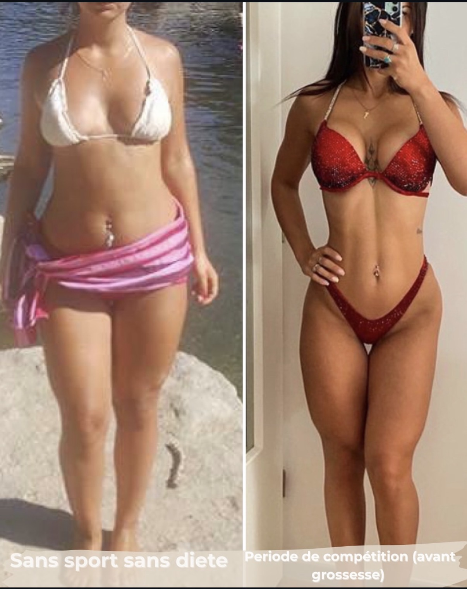
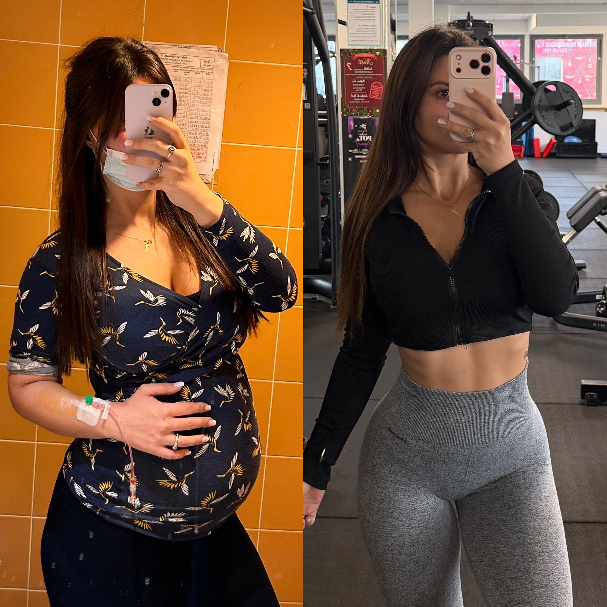

De là où je venais…
à ce que je suis devenue.
Adolescente, j'étais en surpoids.
Le sport, je l'évitais. Je trouvais toujours une excuse.
En cours d'EPS, j'étais celle qui se cachait derrière les bâtiments pour ne pas courir. Celle qui "oubliait" ses affaires. Celle qui regardait les autres sans oser.
Ce n'était pas de la paresse.
C'était de la honte.
Je ne me reconnaissais pas dans mon corps. Je ne savais pas quoi en faire. Et je n'avais personne pour me montrer comment changer ça.
C'est la police qui m'a structurée.
Gardienne de la paix — un métier exigeant, avec des horaires décalés, un quotidien physiquement dur. J'ai appris ce que c'est de tenir malgré la fatigue. De continuer quand on n'a pas envie.
J'ai commencé à aller en salle. Sérieusement. Mais je me suis perdue. Je faisais des choses sans résultats. Sans méthode, sans repères.
Alors j'ai pris un coach.
Et là — tout a basculé. Pour la première fois, j'ai compris que ce n'était pas un manque de volonté. C'était un manque de méthode.
Je n'avais pas un corps de compétitrice au départ. J'avais quelque chose d'autre : la conviction que le corps répond, si on lui donne les bons outils.
J'ai travaillé. Longtemps. Rigoureusement. Avec un entraînement structuré, une diète précise, un mental à construire semaine après semaine.
Jusqu'au Championnat de France de Fitness.
Je ne dis pas ça pour impressionner. Je le dis pour que tu comprennes quelque chose d'important :
je ne suis pas née avec ce corps. Je l'ai construit. Depuis zéro.
Et puis est venue la grossesse. Avec alitement.
Corps qui gonfle. Corps qu'on ne contrôle plus. Muscles qui disparaissent. Confiance qui part avec eux.
Après — la vraie vie qui reprend. Bébé. Fatigue. Nuits courtes. Temps qui manque.
Se reconstruire dans ces conditions, ce n'est pas glamour. Personne ne te félicite. Personne ne voit l'effort.
Je l'ai fait. Pas parfaitement. Pas vite. Mais je l'ai fait.
C'est là que tout a pris sens. Ce n'est pas à la compétition que je suis devenue une vraie coach. C'est en reconstruisant ma vie de femme, de maman — avec toutes ses contraintes.


Aujourd'hui je suis coach diplômée d'État.
Et ce qui me différencie, ce ne sont pas mes diplômes.
C'est que j'ai vécu chacune de ces étapes de l'intérieur.
L'ado qui n'aimait pas son corps. La sportive qui se perdait en salle. La compétitrice qui a tout donné. La maman qui a tout reconstruit.
Je ne te parle pas de théorie. Je l'ai vécu.
« Le corps est modulable à chaque étape de la vie.
Je l'ai prouvé sur moi-même.
Si moi j'ai pu le faire — toi aussi. »